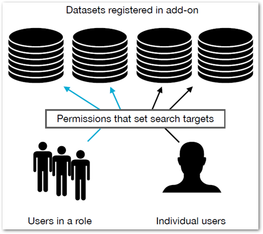

The TIBCO EBX® Information Search Add-on provides a search access point that can target multiple TIBCO EBX® datasets. In an administrative role, you set the search scope for users by determining which datasets are targeted when a specific profile performs a search. You can also manage user search preferences and history.
The following outlines the configuration process for creating a targeted search:
Register datasets with the add-on to make them available as search targets.
Use permissions to link profiles with target datasets.

Once you complete the process outlined above, enabled users will see the search icon displayed on the main EBX® menu bar.
What's Next? Use the instructions in Configuring search to allow users to execute targeted searches.